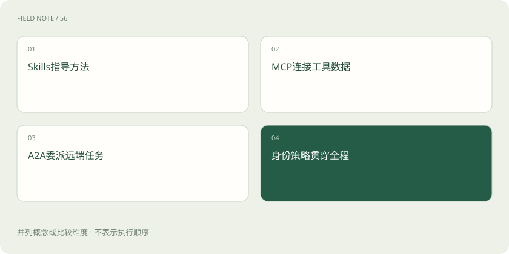
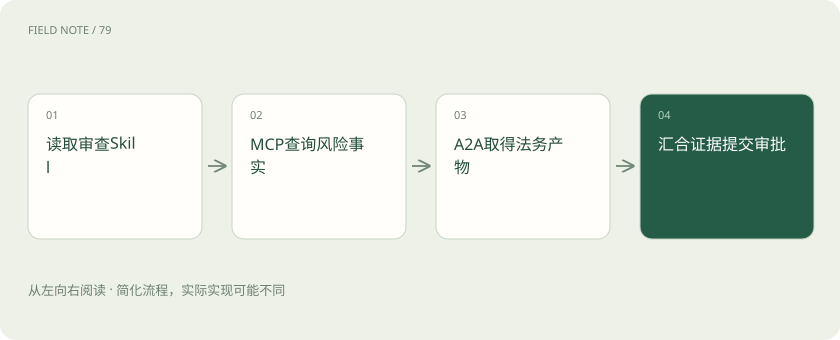

先读哪些知识
先用一个类比理解
类比只帮助建立直觉，不等同于技术的完整机制。
一图看懂

先看一件跨部门工作
采购助手需要核对供应商资料，查询风险记录，再请法务助手分析合同条款。采购审查方法可以写成 Skill，风险查询可以通过 MCP 工具完成，独立运行的法务代理可以通过 A2A 接收委派。三者分别处理方法、能力连接与代理协作。
这不是规定每个项目必须同时使用三套标准。若全部逻辑都在一个应用内，普通函数和 HTTP 接口可能已经足够。只有出现跨客户端复用工具、跨代理协作或可分发任务指导的需求时，标准化才产生具体收益。
MCP 的主语是客户端与服务端
MCP 定义客户端与服务端之间提供工具、资源等能力的交互方式。采购助手所在应用作为主机管理连接，客户端与风险服务通信，模型可以看到应用选择暴露的工具，再由运行时执行实际调用。
工具描述告诉模型如何提出调用，服务端却仍须校验参数和身份。某个工具名叫“查询供应商风险”，并不表示它天然只读、只返回当前租户资料或已经做过脱敏；这些都是实现与部署需要保证的事实。
A2A 的主语是代理任务
A2A 关注独立代理应用之间的互操作，可以围绕代理能力发现、任务交换、状态及产物开展协作。远端法务代理可以拥有自己的模型、内部工具和处理流程，而不必把全部实现细节暴露给采购助手。
一次委派可能持续较长时间，远端也可能要求补充合同或返回无法完成。调用方需要理解任务状态与产物，而不是把它当成一个必定立即返回字符串的函数。它解决协作通信，不替代公司对法律结论的审核责任。
图解：采购审查的能力组合

Skills 表达可复用做法
Agent Skills 将说明与相关资源组织成可被支持工具读取的能力包。采购审查 Skill 可以要求核对供应商身份、检查材料有效期、列出缺失项目，并附输出模板。它主要让代理知道如何做一类工作。
Skill 可能包含脚本，但“包含脚本”与“有权执行脚本”不同。兼容客户端如何发现、加载和执行资源，需要看实现支持；包内写着可以访问财务系统，并不会生成真实凭据，也不能越过运行环境的权限策略。
三者在一个任务中怎样合作
用户先授权处理某家供应商的采购审查。主助手读取适用 Skill，按方法核对材料，再调用 MCP 风险工具取得事实；遇到合同条款问题时，通过 A2A 向法务代理委派范围明确的分析任务，最后整合产物。
整合时应区分风险数据库的事实、法务代理的判断和采购助手的建议。远端代理写得很肯定，也不能使它的结论自动成为审批结果；主管仍需看到对应材料、适用条件和需要人工决定的事项。
兼容性需要逐项确认
支持 MCP 不代表支持所有资源类型、传输与扩展；支持 A2A 不代表能理解任意代理的业务产物；支持 Skills 也不代表对所有元数据和脚本运行方式行为一致。标准名称相同只是起点，实际能力协商与集成测试才决定互通。
接入前应列出最低要求：需要哪些工具模式，是否有长任务通知，产物格式是什么，如何传递关联标识。不要把“可以建立连接”当成“取消、恢复、错误处理都兼容”，这些常在真正上线后才暴露问题。
认证与授权不能混为一谈
认证回答调用者是谁，授权回答这个身份能处理哪些供应商和材料。远端服务需要验证令牌的用途与接收对象，不能把某个服务的凭据直接转交给另一个服务。跨代理委派也要限制数据范围，避免把整个采购档案无差别发送出去。
本地进程连接与远程 HTTP 服务的认证安排可能不同，具体应按协议版本及部署文档实施。无论协议怎样演化，最关键的验收都是：其他租户、被撤销账号和超出委派范围的请求是否真的被拒绝。
图解：调用全过程的授权
协议不会替你解决业务正确性
风险系统返回过期结果、法务代理引用错误合同版本、Skill 使用旧模板，都可能在通信完全成功时发生。还需要版本管理、证据时间与责任记录，才能解释最终建议是怎样形成的。
自检：给现有工具套一层 MCP，是否就能成为可靠的自主代理？不能。MCP 提供能力连接，Agent 循环、停止条件、状态管理及业务验收仍由应用完成。需要这些能力时再引入框架，不必因为协议流行就制造额外层次。
放在一起对比
| 标准 | 主要交换对象 | 不能自动提供 |
|---|---|---|
| MCP | 工具、资源等能力 | 业务授权与Agent循环 |
| A2A | 代理任务、状态与产物 | 远端结论必然正确 |
| Skills | 说明、资源与可选脚本 | 凭据和系统权限 |
放进真实场景
采购助手需要核对供应商资料，查询风险记录，再请法务助手分析合同条款。采购审查方法可以写成 Skill，风险查询可以通过 MCP 工具完成，独立运行的法务代理可以通过 A2A 接收委派。三者分别处理方法、能力连接与代理协作。
别踩这个误区
想一想
A2A 法务代理返回“建议批准”，是否等于采购审批已经完成？
不等于。它是被委派分析的产物，仍需按照业务审批流程，由有权限的身份对具体材料和范围作决定。
关联阅读
资料与边界
本文为原创知识讲解。类比和图示经过简化；示例数字不代表实测或报价。整理日期：2026-11-04。文末列出对应技术的原始资料，具体功能与版本支持请以原文为准。